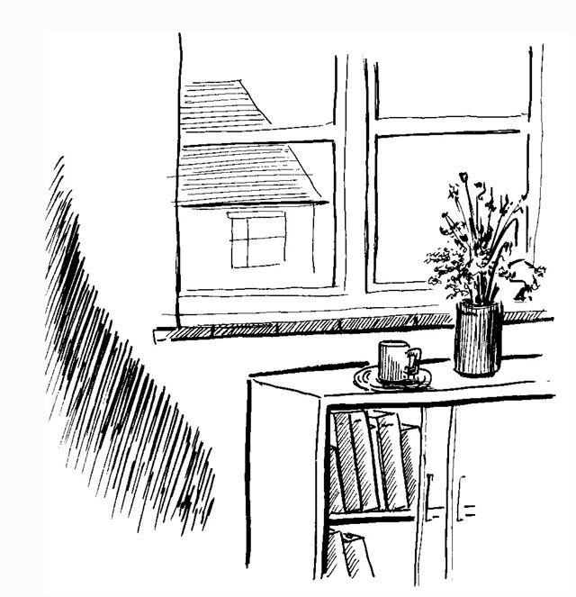

Sometimes when people see they are faceless and therefore capacity for the world, they get worried because they realise they can see their nose. “Noses are attached to faces, so I must have a face. I’m not space for the world after all!”
Clearly for others you have a nose in the middle of your face. This is the objective view of you. But where is your nose from your point of view? And what is it attached to, if anything?
When you look, what do you see? I see a blur that’s sometimes opaque, sometimes transparent. Sometimes it’s on the left, sometimes on the right. These so-called ‘noses’ are also huge – they stretch from the ceiling to the floor.
Are you the same?
Where do these ‘nose blurs’ emerge from? I find nothing at all on the near side of my nose. Yet this nothingness isn’t just nothing – it’s awake! And it’s filled with everything, including my nose.
When I look at my nose, it doesn’t bring back my face but leads me to my no-face, to who I really am.